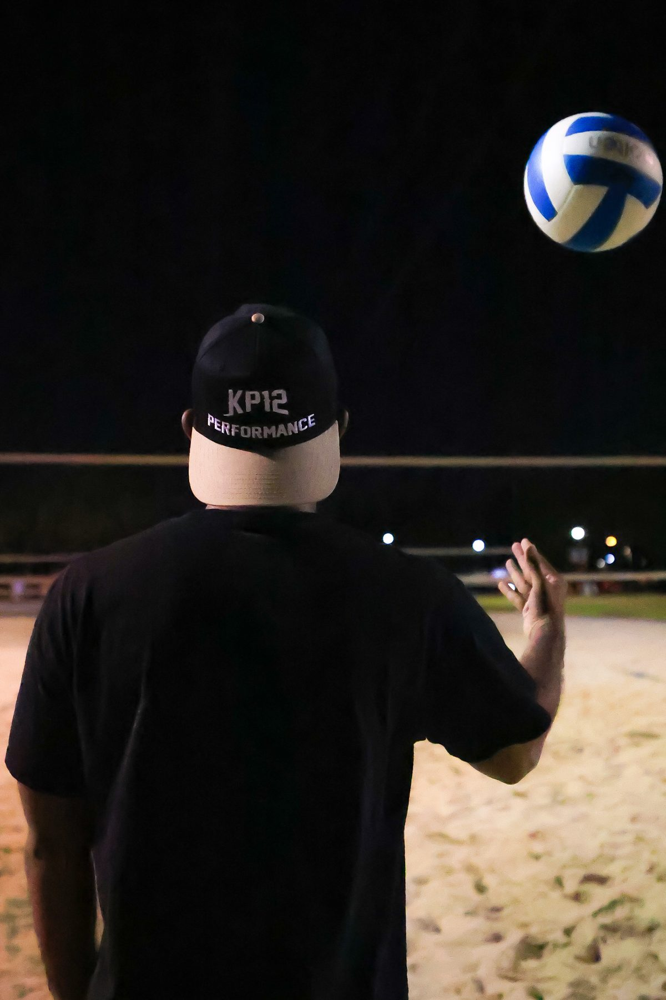
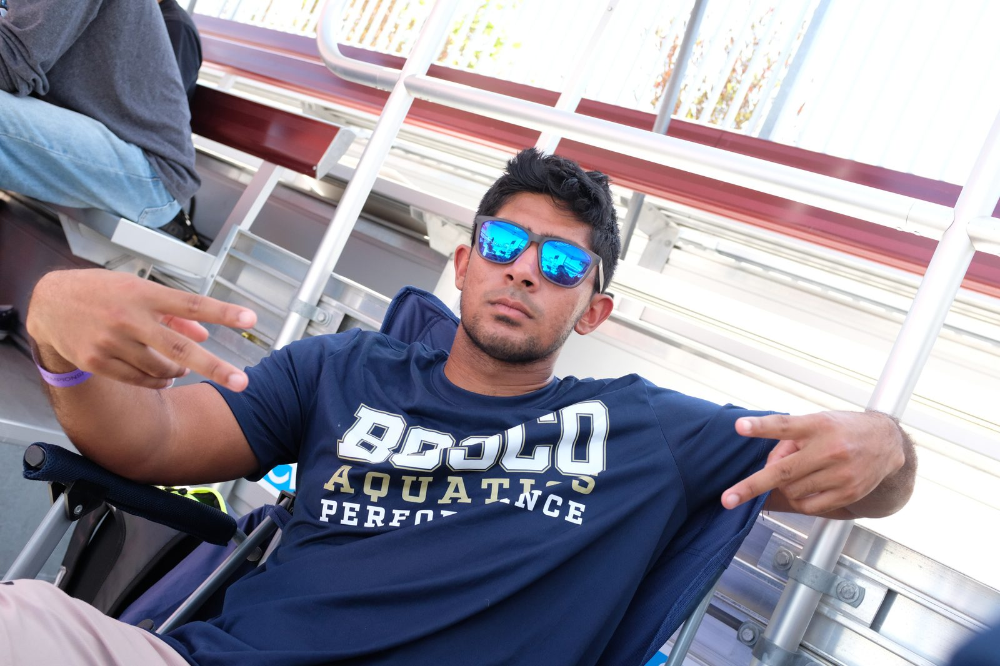
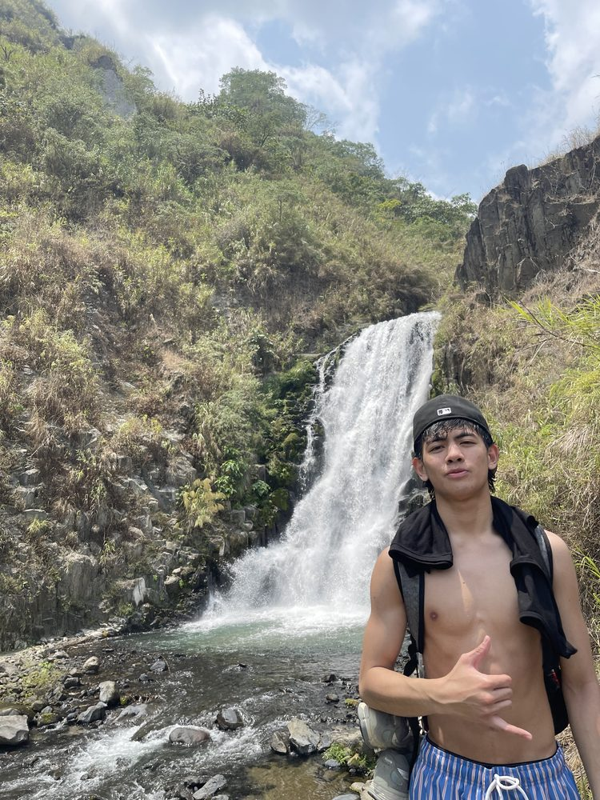

[ KP12 PERFORMANCE ]
[ MISSION STATEMENT ]
To optimize the quality of human life through the integration of science-based strategies for human movement, athletic performance, and health and wellness.
[ OUR STORY ]
It started small — training college friends who just wanted to move and perform better, with no business plan, just reps and results.
What started as helping friends train turned into something bigger: KP12 Performance was established to bring that same standard to every athlete who walks through the door.
[ WHAT WE OFFER ]
Sport Specific trainings, camps, and teams, Designed for all ages and experience levels.
Explore → TrainingStrength and conditioning programs to fit your fitness goals.
Explore → NutritionFueling strategies to support performance, recovery, overall health, and wellness.
Explore →
[ FOUNDER ]
My background is in kinesiology — I earned my B.S. from Cal State Fullerton and I'm finishing my Master's in Applied Exercise Science at Concordia University Chicago. Outside of KP12, I teach kinesiology and head coach the swim and water polo programs at St. John Bosco High School, and I spent years coaching competitive swimmers at the Los Cerritos YMCA.
KP12 Performance is where all of that comes together — real science, real coaching experience, and a genuine belief that performance is built through consistency, not shortcuts.
[ THE TEAM ]
[ Founder / Head Coach ]
Kinesiologist, coach, and the driving force behind KP12. Dedicated to bringing evidence-based training to every athlete who walks through the door.

[ Head Web Developer / Swim Instructor ]
Currently studying at Cal Poly Pomona with 10+ years of competitive swimming. Gerald built and maintains the KP12 digital platform and teaches swim lessons.
[ GET STARTED ]
Browse our programs and book a session. Whatever your level, whatever your goal — we have a lane for you.